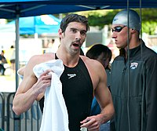
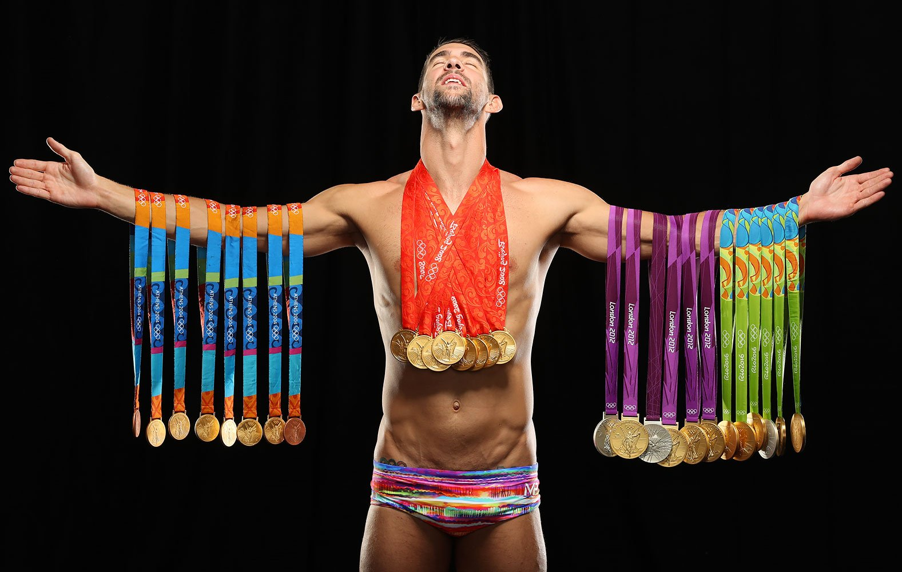

TrayectoriaPhelps se presentó por primera vez en los Juegos Olímpicos en Sídney 2000, siendo el nadador más joven con 15 años de edad. En esta edición de los juegos no obtuvo medallas. Cinco meses después de Sídney, Phelps mejoró el récord mundial de 200 metros mariposa y después volvió a mejorar su propio registro en los Campeonatos del Mundo de Fukuoka, Japó. En los Campeonatos Nacionales de 2002 en Fort Lauderdale, Florida, Phelps también batió el récord mundial de 400 metros y los récords nacionales de 100 metros mariposa y 200 metros estilos.  Regresar |
Campeonato Pan-Pacífico de 2002En los selectivo nacionales para el Campeonato Pan-Pacífico de 2002, en Fort Lauderdale, Phelps registró récord nacional en los 200 m combinado y estuvo cerca de hacerlo en los 200 m mariposa. En los 400 m combinado, mejoró el récord mundial que poseía Tom Dolan con un tiempo de 4:11.09, solo por delante de Erik Vendt quien fue segundo con 4:11.27, también por encima del anterior récord mundial. En los 200 m libre, Phelps fue vencido por Klete Keller, para luego ganar los 100 m mariposa superando a Ian Crocker y registrando un nuevo récord nacional.21 En el Campeonato Pan-Pacífico de Natación en Yokohama, Phelps ganó tres medallas de oro y dos de plata. En su primer evento, los 400 m combinado, ganó aventajando a Erik Vendt con un tiempo de 4:12.48. En los 200 m mariposa perdió con Tom Malchow, finalizando segundo con un tiempo de 1:55.41 contra los 1:55.21 de Malchow. Phelps dijo haber perdido por no tomarse seriamente el entrenamiento de la mariposa luego de romper el récord mundial. En los 200 m combinado ganó con 1:59.70. En el relevo libre 4 × 200 junto a Nate Dusing, Klete Keller y Chad Carvin ganó la medalla de plata finalizando por detrás de Australia. En el relevo combinado 4 x 100, conformado por Aaron Peirsol, Brendan Hansen y Jason Lezak tuvo a Phelps nadando su posta en 51.1 segundos, en su momento la más rápida de la historia. El tiempo final de 3:33.48 fue un nuevo récord del mundo.  |
Campeonato Mundial de 2003En 2003, Phelps batió su propio récord mundial de 400 metros estilos (4:09,09) y en junio, el récord mundial de 200 metros estilos (1:56,04). Continuó en julio de 2004, mejorando de nuevo su récord mundial de 400 metros estilos (4:08,41) durante los Trials para los Juegos Olímpicos de 2004. En los nacionales, Phelps ganó los 200 m libre, 200 m espalda y 100 m mariposa. Se convirtió en el primer nadador americano en ganar tres diferentes carreras en tres diferentes estilos en los campeonatos nacionales. En el Duel in the Pool de 2003, una competencia que enfrenta a los nadadores estrella de Australia y Estados Unidos, Phelps rompió el récord del mundo de los 400 m combinado con un tiempo de 4:10.73 y estuvo cerca de repetirlo en los 100 m mariposa, quedando solo a tres centésimas. En los selectivos al mundial de Barcelona en Santa Clara, Phelps rompió el récord mundial de los 200 m combinado, registrando 1:57.94.23 Él dijo lograr el récord luego que Don Talbot dijo ser poco probable que lo hiciera, usando esas palabras como motivación. En el Campeonato Mundial de 2003, Phelps ganó cuatro medallas de oro, dos de plata y registró cinco récords mundiales.2526 Rompió el primer récord el 22 de julio en semifinales de los 200 m mariposa, nadó en 1:53.93 rompiendo su propia marca de 1:54.58 establecida en 2001, siendo el primer nadador en bajar los 1:54.00. Ya en la final, el 23 de julio, Phelps ganó fácilmente la medalla de oro, pero no se acercó a su récord, terminando con un tiempo de 1:54.35.28 Menos de una hora más tarde nadó la posta inicial del relevo libre 4 × 200, logrando un tiempo de 1:46.60, nuevo récord nacional. Sin embargo, los americanos no pudieron igualar a los australianos y fueron segundos con 7:10.26 contra los 7:08.58 del relevo de Australia. |